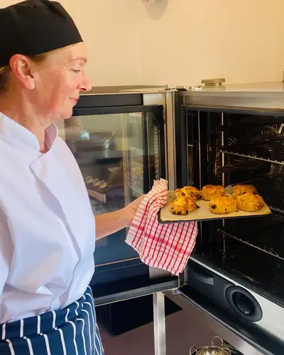
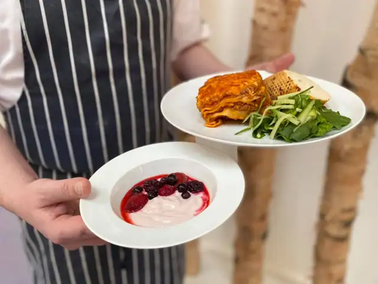

Food at nursery
Every meal and snack is cooked here by our chef, Lindsey. Tell us about any allergy and we will plan around it.

Cooked here
Lindsey, our chef, plans and cooks our meals and snacks here. She holds a Diploma in Professional Cookery. Food can be pureed if your child needs it.
Our menu runs on a 10-week rota and may change with the seasons. Milk, water and fresh fruit are always available.

Allergies and special diets
Allergies: tell us straight away if your child has any allergy. Our kitchen knows every child's allergies and the days they attend. You can ask the kitchen for ingredients and allergen information at any time.
All snacks may contain traces of nuts. We make other choices for allergies, special diets and fussy eaters.
Come and see us
Look round the nursery and meet the team.
Phone us on 01292 388456.